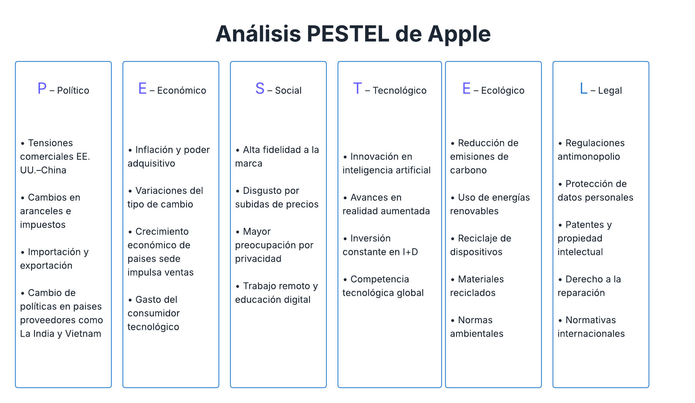
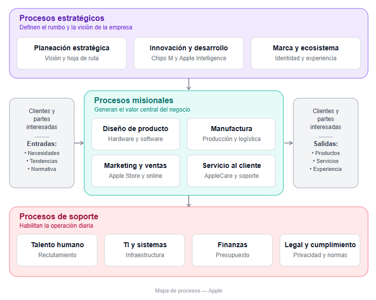

Apple Inc.
Apple Inc.
Análisis organizacional: entradas y salidas, partes interesadas, entorno PESTEL y procesos
Análisis organizacional: entradas y salidas, partes interesadas, entorno PESTEL y procesos
Análisis detallado de los recursos que ingresan al sistema de Apple (materiales, talento, tecnología) y el valor que se entrega al mercado (productos, servicios, dividendos).

Mapeo del nivel de influencia e interés de los stakeholders clave: desde clientes y empleados hasta proveedores e inversores.
Impacto de los factores Políticos, Económicos, Socioculturales, Tecnológicos, Ecológicos y Legales en el ecosistema global de Apple.

Visualización de los procesos estratégicos, misionales (I+D, ensamblaje, marketing, retail) y de apoyo que mantienen la maquinaria operativa.
